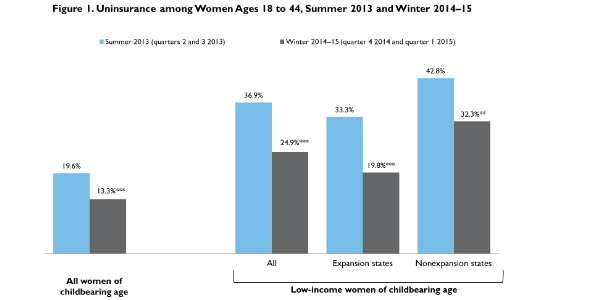

|  |
|
|||||||||||||||||||||||||||||||||
Changes in Insurance Coverage, Access to Care, and Health Care Affordability for Women of Childbearing Age
Adele Shartzer, Nicole Garro, Cynthia Pellegrini, and Sharon K. LongOctober 27, 2015
In 2013, more than one in five women of childbearing age was uninsured (Cohen and Martinez 2014). Women who do not have health insurance coverage are more likely to forgo necessary medical care because of cost and have lower rates of preventive screenings, such as Pap smears and mammography (Kaiser Family Foundation 2013). Studies have also shown that access to preconception and interconception care can improve the health of women and their future children by addressing chronic health conditions and risk behaviors associated with adverse pregnancy outcomes (Atrash 2006; Moos and Cefalo 1987). Adequate preconception care for women of childbearing age can also reduce disparities in adverse pregnancy outcomes (Johnson et al. 2006). Health insurance coverage facilitates access to care because women who are uninsured before becoming pregnant are less likely to receive preconception counseling (Williams et al. 2012).
The Affordable Care Act (ACA), by expanding the availability of affordable insurance coverage and enhancing insurance benefits, could improve access to affordable health care for women of childbearing age.1 Before the ACA, most states covered pregnant women with income up to 185 percent of the federal poverty level (FPL) through Medicaid or the Children’s Health Insurance Program (CHIP); eligibility began at the time of pregnancy and lasted 60 days after birth. In 2010, 45 percent of births were funded by Medicaid (Markus et al. 2013), but many of these women did not have access to health care before becoming pregnant. Most states established much lower income eligibility levels for parents, and only a handful of states covered low-income women without dependent children, leaving many women without access to affordable health care, including preconception health care, before pregnancy. In January 2013, only 18 states offered Medicaid benefits to parents with income above 100 percent of FPL, and only 12 states either offered Medicaid benefits to nondisabled adults without dependent children or were starting early expansions of ACA provisions.2 Under the ACA, states have the option to expand Medicaid to nearly all adults with income below 138 percent of FPL; as of March 2015, 28 states and the District of Columbia had implemented the Medicaid expansion.3 In addition, the ACA requires insurers in the individual and small-group markets, both within and outside of the health insurance Marketplaces, to cover essential health benefits such as maternity and newborn services and preventive services, which particularly benefit women.
What We Did
This brief uses data from the Health Reform Monitoring Survey (HRMS) to examine changes in uninsurance and health care access and affordability for women of childbearing age (ages 18 to 44) between summer 2013, just before the implementation of the ACA’s major coverage provisions, and winter 2014–15. We pool June and September 2013 data for the preimplementation estimates (which we refer to collectively as “summer 2013”) and December 2014 and March 2015 for post-ACA estimates (which we refer to as “winter 2014–15”) to obtain adequate sample sizes for subgroups. Table 1 shows the sample sizes for women of childbearing age. We focus on all women of childbearing age and low-income women of childbearing age (those with family income at or below 138 percent of the federal poverty level [FPL]), which is the income range targeted by the ACA’s federal Medicaid expansion). We examine these changes for women in states expanding Medicaid and in states not expanding Medicaid as of March 2015. Pooling December 2014 and March 2015 data produces estimates that span the second open enrollment period for coverage through the health insurance Marketplaces.
Our estimate of changes in uninsurance is based on women’s reported insurance coverage at the time of the survey. For our measure of access to care, we focus on the share of women who have a usual source of care at the time of the survey as well as the share that had a routine checkup in the past 12 months. To measure issues with affordability of care, we focus on the share of women who report an unmet need for care because of cost within the past 12 months and the share who report having problems paying medical bills within the past 12 months. Having a usual source of care is a structural measure that reflects the presence of a resource that facilitates access; utilization measures such as “getting a routine checkup” capture the ultimate outcome of good access to care (Agency for Healthcare Research and Quality 2014). Respondents’ health insurance status may have changed over the course of the 12-month reference period. Consequently, reported outcomes (e.g., access problems) could have occurred before or after the change in insurance status, and we cannot determine the sequence in the HRMS.
Each round of the HRMS is weighted to be nationally representative. We use these weights and regression adjustment to control for differences in the demographic and socioeconomic characteristics of the respondents across the different rounds of the survey.4 We focus on statistically significant changes over time, defined as changes that are significantly different from zero at the 5 percent level or lower. Although the estimated changes coincide with the implementation of ACA coverage expansions, we do not attempt to disentangle the changes in health care affordability caused by coverage gains under the ACA from changes caused by other factors that affect affordability, such as those related to the business cycle.
What We Found
The uninsurance rate among women of childbearing age decreased from 19.6 percent in summer 2013 to 13.3 percent in winter 2014–15, representing an increase in coverage for 5.5 million women (figure 1).5 Following the implementation of the ACA’s major coverage provisions, the uninsurance rate among women of childbearing age decreased 6.3 percentage points, from 19.6 to 13.3 percent. For low-income women targeted by the ACA’s Medicaid expansion, the reduction in uninsurance was particularly large, declining 12.0 percentage points overall from 36.9 percent to 24.9 percent. Nonetheless, nearly one in four low-income women of childbearing age was uninsured in winter 2014–15, highlighting the need for both ongoing outreach to enroll uninsured, Medicaid-eligible low-income women and support for safety-net services for those who are not eligible for Medicaid.
State decisions about Medicaid eligibility levels and whether to implement the ACA’s Medicaid expansion affect the availability of affordable insurance coverage options for many low-income women. Uninsurance rates among low-income women were higher in Medicaid nonexpansion states in summer 2013, before the implementation of the ACA’s Medicaid provisions: 42.8 percent of low-income women were uninsured in nonexpansion states compared with 33.3 percent in expansion states. Between summer 2013 and winter 2014–15, low-income women in expansion states experienced a larger reduction in uninsurance than did low-income women in nonexpansion states (13.6 versus 10.6 percentage points). These reductions, combined with the differences in pre-ACA levels of uninsurance in Medicaid expansion states compared with nonexpansion states, contributed to an uninsurance rate among low-income women in expansion states that by 2014–15 was significantly lower than that of low-income women in nonexpansion states (19.8 percent versus 32.3 percent, a 12.5 percentage-point difference).
So far, the reductions in uninsurance have not translated to significant improvements in broad measures of access to care for all women of childbearing age. As adults transition to new sources of insurance coverage and ACA implementation continues, we find broad measures of access to care held steady for women of childbearing age overall between summer 2013 and winter 2014–15, with no change in the share of those who had a usual source of care (71.2 and 71.1 percent respectively; figure 2). Similarly, there was no change in the share of women with a routine checkup in the past 12 months between summer 2013 and winter 2014–15: slightly more than 6 in 10 women reported a routine checkup in both periods (figure 3).
We also found stability in access to care for low-income women between summer 2013 and winter 2014–15, both in the share with a usual source of care (64.5 and 63.3 percent, respectively) and the share with a routine checkup (55.7 and 57.0 percent, respectively). The stability in access to care for low-income women suggests that concerns about potential provider shortages among those serving Medicaid and other vulnerable populations following ACA implementation have not yet materialized.
Access trends over time for low-income women vary by state Medicaid expansion status. Between summer 2013 and winter 2014–15, low-income women in expansion states experienced a 4.2 percentage-point increase in the share with a usual source of care and a 4.7 percentage-point increase in the share with a recent routine checkup. Though the increase in Medicaid expansion states was not statistically significant, the share of low-income women with a usual source of care increased in magnitude, suggesting expanded coverage may be connecting low-income women to the health care system. In nonexpansion states, however, the share of low-income women with a usual source of care decreased 6.7 percentage points between summer 2013 and winter 2014–15; only 55.8 percent reported having a usual source of care in winter 2014–15, raising concerns about ongoing access to care for this group of women.
Barriers to care are beginning to decrease for women of childbearing age. A lower share of women reported problems accessing care in winter 2014–15 (21.8 percent, figure 4) than in summer 2013 (23.7 percent), and women were also less likely to report unmet need for care because of cost in the past 12 months (38.1 versus 42.9 percent in summer 2013; figure 5). Low-income women in particular reported fewer cost-related barriers to care after the implementation of the ACA’s coverage provisions: the share reporting unmet need for care because of cost declined 9.5 percentage points from 57.6 percent in summer 2013 to 48.1 percent in winter 2014–15.
Despite these improvements, barriers to care were common among low-income women of childbearing age, particularly for services such as dental care and prescription medications (34.7 and 23.2 percent of low-income women, respectively, reported unmet need for these services because of cost; data not shown). Even with the expanded availability of health insurance coverage under the ACA, some services may not be covered. For example, dental care is often carved out of private insurance policies and adult dental health coverage was excluded from the ACA’s list of essential health benefits. Limitations on coverage for other services, such as prescription medications, can expose women to high potential out-of-pocket costs, creating barriers to care.
Women of childbearing age reported fewer problems in their family paying medical bills after ACA enactment. The share of women who reported a problem paying family medical bills in the past 12 months decreased from 26.2 to 22.3 percent between summer 2013 and winter 2014–15 (figure 6). The reduction in problems paying medical bills is particularly pronounced among low-income women, who are more likely to report affordability issues with health care. Between summer 2013 and winter 2014–15, the share of low-income women reporting problems paying medical bills fell 8.5 percentage points. Likely reflecting the strong coverage gains in Medicaid expansion states and the financial protections Medicaid coverage provides against high medical costs, low-income women of childbearing age in expansion states reported a significant decrease in problems paying medical bills, and in winter 2014–15 the share of low-income women who reported problems paying medical bills was significantly lower in expansion states than in nonexpansion states (24.2 versus 32.2 percent).
What It Means
Relative to summer 2013, just before the implementation of the ACA’s major coverage provisions, significant improvements in health insurance coverage and health care access and affordability for women of childbearing age had been made as of winter 2014–15. The reductions in uninsurance over this period translate to a gain in coverage for an estimated 5.5 million women of childbearing age. We find reductions in uninsurance for women in both Medicaid expansion states and nonexpansion states, and reductions are particularly pronounced for low-income women in expansion states who were targeted by the ACA’s Medicaid expansion provisions. The expanded availability of Medicaid coverage in some states to low-income women of childbearing age regardless of pregnancy or parental status could reduce gaps in insurance coverage for women through their childbearing years. This, in turn, could translate to improved access to health care over time, helping women of childbearing age maintain or improve their health and the health of children they may bear. But gaps in insurance coverage persisted as of winter 2014–15: 19.8 percent of low-income women of childbearing age in Medicaid expansion states and 32.3 percent of low-income women in nonexpansion states were uninsured, raising concerns about meeting this group’s health needs.
Broad measures of access to care reflecting connection to and use of the health care system support the conclusion that access to care has broadly remained stable between summer 2013 and winter 2014–15 for women of childbearing age. Not all women will require a routine checkup every 12 months, and recent recommendations have shifted away from annual Pap smears for women and annual checkups for all adults (Krogsboll et al. 2012).6 However, routine checkups remain a consistent marker of health care utilization, and evidence suggests that the levels of routine checkups have held steady. It may take some time for women to need and obtain a routine checkup, so it may be too early in ACA implementation to realize any marked improvements in utilization. In addition, some have expressed concerns that rapid increases in the number of people with insurance coverage would stress provider capacity and reduce access (Hill, Wilkinson, and Holahan 2014). Currently, however, we do not find evidence that these concerns have materialized for women of childbearing age (though it may take time for newly insured individuals to change care-seeking behavior), and the expiration of federal support for temporary enhanced reimbursement for Medicaid primary care services could affect access to providers (Medicaid and CHIP Payment and Access Commission 2015).
Though ACA implementation is still in its initial phase, we do find some improvements in access to care for low-income women of childbearing age in Medicaid expansion states in winter 2014–15 compared with summer 2013: a higher share reports that they have a usual source of care. The reduction in the share of low-income women in nonexpansion states who have a usual source of care could reflect broader changes in the health system in those states, such as provider restructuring, changes in the availability of care at safety-net institutions, or other factors that our study does not assess. Continued monitoring of access to care, particularly for low-income women in nonexpansion states and other women of childbearing age who remain uninsured, will be important as the ACA’s reductions in safety-net funding—intended to accompany reductions in uncompensated care through increased insurance coverage—grow larger in future years.
Though broad measures of access to care remained largely stable between summer 2013 and winter 2014–15 for women of childbearing age, we do find reductions in barriers to care and family problems paying medical bills. A lower share of women report unmet need for care because of cost. These improvements were particularly pronounced for low-income women, who experienced declines in unmet need in both Medicaid expansion and nonexpansion states. Some low-income women in nonexpansion states could qualify for subsidized coverage through the health insurance Marketplaces, and some low-income women of childbearing age could also qualify for Medicaid under pre-ACA standards. Simplified application procedures and increased awareness and outreach could contribute to the improvements in insurance coverage and affordability we find in our analysis. In addition, other factors, such as an improving economy and slowed growth in health care spending, could also contribute to the improvements in affordability we find.
Despite the progress we find in reducing uninsurance among women of childbearing age and the gains in care affordability, significant gaps for women of childbearing age remain as of winter 2014–15. Nearly one-quarter of low-income women of childbearing age were uninsured, and significant shares have no usual source of care, have not had a routine checkup in the past 12 months, or report problems accessing care. About half of low-income women of childbearing age report an unmet need for health care because of cost, raising concerns about access to care for these women. Gaps in access to care and affordability challenges can impede the ability of women of childbearing age to obtain the health services they need, which can make it difficult to maintain or improve their own health and ultimately affect their future birth outcomes.
References
Agency for Healthcare Research and Quality. 2014. “Chapter 9: Access to Health Care” in National Healthcare Quality Report 2011. Rockville, MD: Agency for Healthcare Research and Quality.
Atrash, Hani K., Kay Johnson, Myron Adams, José F. Cordero, and Jennifer Howse. 2006. “Preconception Care for Improving Perinatal Outcomes: The Time to Act.” Maternal and Child Health Journal 10 (Suppl 1): 3–11.
Cohen, Robin A., and Michael E. Martinez. 2014. “Health Insurance Coverage: Early Release of Estimates From the National Health Interview Survey, 2013” Washington, DC: US Department of Health and Human Services, Centers for Disease Control and Prevention, National Center for Health Statistics.
Hill, Ian, Margaret Wilkinson, and John Holahan. 2014. “The Launch of the Affordable Care Act in Eight States: The Problem of Provider Capacity.” Washington, DC: Urban Institute.
Johnson, Kay, Samuel F. Posner, Janis Biermann, José F. Cordero, Hani K. Atrash, Christopher S. Parker, Sheree Boulet, and Michele G. Curtis. 2006. Recommendations to Improve Preconception Health and Health Care—United States: A Report of the CDC/ATSDR Preconception Care Work Group and the Select Panel on Preconception Care. Morbidity and Mortality Weekly Report 55 (RR06): 1–23.
Kaiser Family Foundation. 2013. “Fact Sheet: Women’s Health Insurance Coverage.” Menlo Park, CA: Kaiser Family Foundation.
Krogsbøll, Lasse T., Karsten Juhl Jørgensen, Christian Grønhøj Larsen, and Peter C. Gøtzsche. 2012. “General Health Checks in Adults for Reducing Morbidity and Mortality from Disease: Cochrane Systematic Review and Meta-Analysis.” British Medical Journal 345.
Medicaid and CHIP Payment and Access Commission. 2015. “Chapter 8: An Update on the Medicaid Primary Care Payment Increase,” in March 2015 Report to Congress. Washington, DC: Medicaid and CHIP Payment and Access Commission.
Markus, Anne Rossier, Ellie Andres, Kristina D. West, Nicole Garro, and Cynthia Pellegrini. 2013. “Medicaid Covered Births, 2008 through 2010, in the Context of the Implementation of Health Reform.” Women’s Health Issues 23 (5): e273–80.
Moos, Merry K., and Robert C. Cefalo. 1987. “Preconceptional Health Promotion: a Focus for Obstetric Care.” American Journal of Perinatology 4 (1): 63–67.
Williams, Letitia, Lauren Zapata, Denise V. D’Angelo, Leslie Harrison, and Brian Morrow. 2012. “Associations between Preconception Counseling and Maternal Behaviors Before and During Pregnancy.” Maternal and Child Health Journal 16 (9): 1854–61.
About the Series
This brief is part of a series drawing on the HRMS, a quarterly survey of the nonelderly population that is exploring the value of cutting-edge Internet-based survey methods to monitor the ACA before data from federal government surveys are available. The briefs provide information on health insurance coverage, access to and use of health care, health care affordability, and self-reported health status, as well as timely data on important implementation issues under the ACA. Funding for the core HRMS is provided by the Robert Wood Johnson Foundation and the Urban Institute.
This brief was made possible with funding from the March of Dimes Foundation. The March of Dimes Foundation is a national voluntary health agency whose volunteers and staff work to improve the health of infants and children by preventing premature birth, birth defects, and infant mortality. Founded in 1938, the March of Dimes Foundation funds research, community services, education, and advocacy. For the latest resources and information, visit marchofdimes.org or nacersano.org.
For more information on the HRMS and for other briefs in this series, visit www.urban.org/hrms.
About the Authors
Adele Shartzer is a research associate and Sharon K. Long is a senior fellow in the Urban Institute’s Health Policy Center; Nicole Garro is director of public policy research and Cynthia Pellegrini is senior vice president of public policy and government affairs at the March of Dimes Foundation.
The authors gratefully acknowledge the suggestions and assistance of Thomas Dimmock and Michael Karpman.
Notes 1 Cynthia Pellegrini and Nicole Garro, “Medicaid Expansion: Benefits for Women of Childbearing Age and their Children,” Health Affairs blog, February 22, 2013. 2 These states include nine with Medicaid income eligibility limits for nondisabled adults without dependent, birthed children in January 2013 (AZ, CO, CT, DE, DC, HI, MN, NY, and VT) as well as three states initially expanding coverage to nondisabled adults through waivers (CA, NJ, and WA) as part of the ACA. 3 The states implementing the Medicaid expansion as of March 2015 include AZ, AR, CA, CO, CT, DC, DE, HI, IL, IN, IA, KY, MD, MA, MI, MN, NV, NH, NJ, NM, NY, ND, OH, OR, PA, RI, VT, WA, and WV. See “Status of State Action on the Medicaid Expansion Decision,” Kaiser Family Foundation, accessed October 5, 2015. 4 We control for the variables used in the poststratification weighting of the KnowledgePanel (the Internet-based survey panel that underlies the HRMS) and the poststratification weighting of the HRMS. These variables are sex, age, race and ethnicity, language, education, marital status, whether any children are present in the household, household income, family income as a percentage of FPL, homeownership status, Internet access, urban or rural status, and census region. We also control for citizenship status and participation in the previous quarter’s survey (i.e., whether the respondent completed the survey in the previous quarter, was sampled in the previous quarter but did not complete the survey, or was not sampled in the previous quarter). The basic patterns shown for the regression-adjusted measures are similar to those based solely on simple weighted estimates. In presenting the regression-adjusted estimates, we use the predicted outcome (e.g. uninsurance) in each quarter for the same nationally representative population. For this analysis, we base the nationally representative sample on survey respondents from the most recent 12-month period from the HRMS (i.e., quarter 1 of 2015 and quarters 2–4 of 2014). 5 To extrapolate our estimates of changes in uninsurance rates to the number of women of childbearing age who have gained coverage over the same period, we use projections for the size of the 2015 population from the US Census Bureau. These files give population projections by race, ethnicity, and sex of all ages from 2014 to 2060 based on estimated birth rates, death rates, and net migration rates. Using the “Table 1” file (which has a 2015 projected population of 321,368,864), we summed the 2015 population projections for all female 18-to-44-year-olds to arrive at 86,764,142 women of childbearing age in 2015. See “2014 National Population Projections: Downloadable Files,” US Census Bureau, accessed October 5, 2015. 6 “Cervical Cancer: Screening,” United States Preventive Services Task Force, last reviewed July 2015.
|
||||||||||||||||||||||||||||||||||

 |
 |
 |